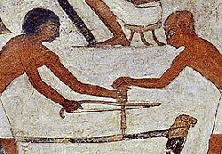

This
painting from an ancient Egyptian tomb shows two carpenters using a bow drill
on a piece of wooden furniture. One pushes the drill onto the wood, while the
other operates the drill by moving the bow backwards and forwards. The movement
of the bow-string around the drill makes it rotate. A bow can also be used to
operate a cutting wheel. (Try out a 'bow-drill' for yourself, with a pencil,
and a piece of string!).